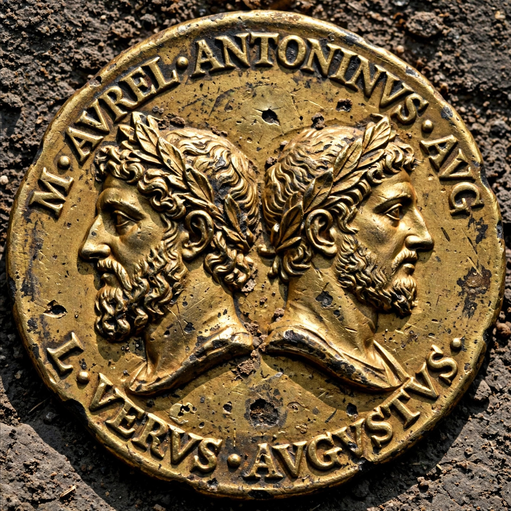

| Second Triumvirate | |
|---|---|
| Established | 27 November 43 BC (Lex Titia) |
| Members | Octavian, Mark Antony, Marcus Aemilius Lepidus |
| Duration | 43–33 BC |
| Preceded by | Roman Republic government |
| Followed by | Principate of Augustus |
The Second Triumvirate was an extraordinary commission and magistracy created for Mark Antony, Octavian, and Marcus Aemilius Lepidus under the Lex Titia on 27 November 43 BC with a term of five years, expiring on 31 December 38 BC. Unlike the unofficial First Triumvirate, the Second Triumvirate was a legal institution — a board of three men "for the reconstitution of the republic" (triumviri rei publicae constituendae) with dictatorial powers.
After Julius Caesar's assassination in 44 BC and the inconclusive fighting at Mutina, Octavian marched on Rome and then joined Antony and Lepidus at Bononia (Bologna). Their first act was a proscription of political enemies on the model of Sulla: lists of men declared outlaw, whose property was confiscated and who could be killed for a reward. Ancient sources give figures of around 300 senators and 2,000 equestrians; the most famous victim was Cicero, executed on 7 December 43 BC.
In October 42 BC the triumvirs defeated Caesar's assassins Brutus and Cassius at the Battle of Philippi in Macedonia. The Roman world was then divided: Antony took the wealthy East, Octavian the West (with the thankless task of settling veterans in Italy), and Lepidus received Africa. The Treaty of Brundisium (40 BC) renewed the arrangement, sealed by the marriage of Antony to Octavian's sister Octavia. Sextus Pompey was defeated at Naulochus in 36 BC, and Lepidus, who tried to claim Sicily, was stripped of power and exiled to comfortable house arrest.
The triumvirate was legally renewed for five more years at Tarentum in 37 BC but lapsed at the end of 33 BC. Relations between Octavian and Antony collapsed into propaganda war and then open conflict: Antony divorced Octavia and aligned himself with Cleopatra of Egypt. At the Battle of Actium on 2 September 31 BC, Octavian's forces under Agrippa destroyed the Antonian fleet; Antony and Cleopatra fled to Egypt and died by suicide the following year, leaving Octavian sole master of the Roman world and, as Augustus, founder of the Principate.